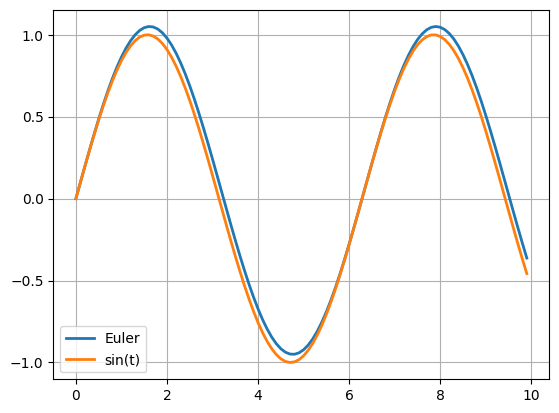
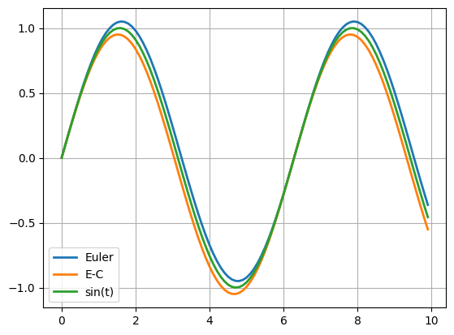
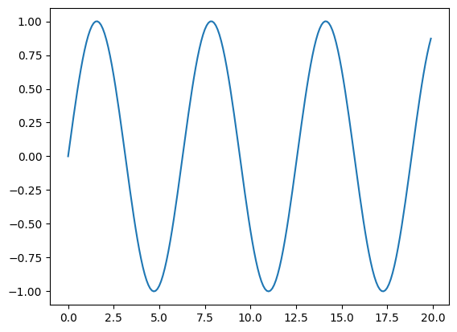
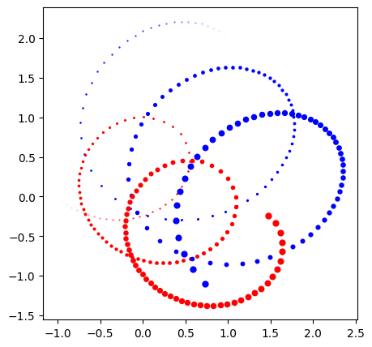

미분방정식의 풀이¶
오일러 방법¶
 1import numpy as np
2import matplotlib.pyplot as plt
3
4dt = 0.1
5t = np.arange(0, 10, dt)
6x = np.zeros(len(t))
7
8def dxdt(x):
9 return np.cos(x)
10
11if __name__ == "__main__":
12 for i in range(1, len(t)):
13 x[i] = x[i-1]+dxdt(t[i-1])*dt
14 plt.plot(t, x, label="Euler", lw=2)
15 plt.plot(t, np.sin(t), label="sin(t)", lw=2)
16 plt.grid()
17 plt.legend()
18 plt.savefig("EX1_euler_method.png", bbox_inches='tight')
오일러-크로머 방법¶
 1import numpy as np
2import matplotlib.pyplot as plt
3
4dt = 0.1
5t = np.arange(0, 10, dt)
6xE = np.zeros(len(t))
7xC = np.zeros(len(t))
8
9def dxdt(x):
10 return np.cos(x)
11
12if __name__ == "__main__":
13 for i in range(1, len(t)):
14 xE[i] = xE[i-1]+dxdt(t[i-1])*dt
15 xC[i] = xC[i-1]+dxdt(t[i])*dt
16 plt.plot(t, xE, label="Euler", lw=2)
17 plt.plot(t, xC, label="E-C", lw=2)
18 plt.plot(t, np.sin(t), label="sin(t)", lw=2)
19 plt.grid()
20 plt.legend()
21 plt.savefig("EX2_euler_cromer.png", bbox_inches='tight')
벌렛 방법¶
 1import numpy as np
2import matplotlib.pyplot as plt
3
4x0 = 0; v0 = 1; dt = 0.1; t_max = 20
5t = np.arange(0, t_max, dt)
6x, v = np.zeros(len(t)), np.zeros(len(t))
7x[0] = x0; v[0] = v0;
8
9def a(x):
10 return -x
11
12if __name__ == "__main__":
13 x[1] = x[0] + v[0]*dt + 0.5*a(x[0])*dt*dt
14 for i in range(2, len(t)):
15 x[i] = 2*x[i-1] - x[i-2] + a(x[i-1])*dt*dt
16
17 plt.plot(t, x)
18 plt.savefig("EX3_verlet_method.png", bbox_inches='tight')
이체 운동¶
 1import numpy as np
2import matplotlib.pyplot as plt
3
4x1, y1 = [-1], [ 0]; m1 = 6 # 입자 1의 초기위치와 질량
5x2, y2 = [ 1], [ 2]; m2 = 4 # 입자 2의 초기위치와 질량
6vx1, vy1 = [0.5], [-0.5] # 입자 1의 속력
7vx2, vy2 = [-0.5], [0.5] # 입자 2의 속력
8
9dt = 0.1 # 시간 간격
10t = np.arange(0, 14, dt) # 시간 공간
11
12def force():
13 global m1, m2, x1, y1, x2, y2
14 """
15 두 입자 사이에 미치는 힘
16 출력: Fx, Fy
17 """
18 r2 = (x2[-1]-x1[-1])**2 + (y2[-1]-y1[-1])**2
19 Th = np.arctan2(y2[-1]-y1[-1], x2[-1]-x1[-1])
20 F = m1*m2/r2
21 Fx = F*np.cos(Th)
22 Fy = F*np.sin(Th)
23 return Fx, Fy
24
25if __name__ == "__main__":
26 """
27 벌렛을 사용하여 두 입자의 궤도를 그린다.
28 """
29 lw = np.linspace(0, 10, len(t)-1)
30 for _t in t:
31 Fx, Fy = force()
32 x1.append(x1[-1] + vx1[-1]*dt + 0.5*Fx*dt*dt/m1)
33 y1.append(y1[-1] + vy1[-1]*dt + 0.5*Fy*dt*dt/m1)
34 x2.append(x2[-1] + vx2[-1]*dt - 0.5*Fx*dt*dt/m2)
35 y2.append(y2[-1] + vy2[-1]*dt - 0.5*Fy*dt*dt/m2)
36 nFx, nFy = force()
37 vx1.append(vx1[-1] + 0.5*dt*(Fx+nFx)/m1)
38 vy1.append(vy1[-1] + 0.5*dt*(Fy+nFy)/m1)
39 vx2.append(vx2[-1] - 0.5*dt*(Fx+nFx)/m2)
40 vy2.append(vy2[-1] - 0.5*dt*(Fy+nFy)/m2)
41
42 plt.figure(figsize=(5,5))
43 for _lw, _x1, _y1, _x2, _y2 in zip(lw,x1,y1,x2,y2):
44 plt.plot(_x1, _y1, ".r", ms=_lw)
45 plt.plot(_x2, _y2, ".b", ms=_lw)
46 plt.savefig("EX4_two_body_motion.png", bbox_inches='tight')